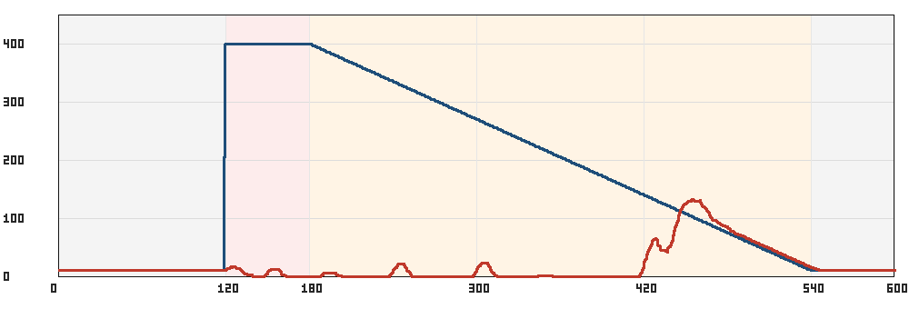
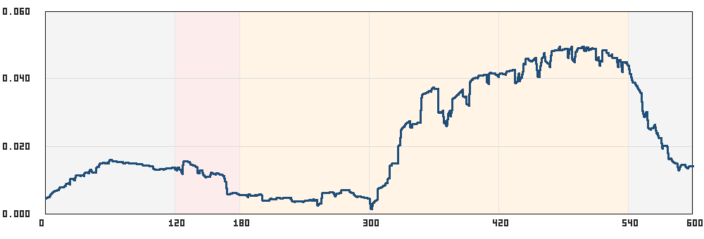

Tugas 1 — Cloud Experimental Environment
Run burst-flash-sale-20261026T231410Z-r4. System under test: Online Boutique, satu pod per service. Dataset: combined.csv pada measurement window yang sama dengan workload.csv.
Pengukuran ini memakai instrumen lab yang sudah tersedia: cluster kind, ingress-nginx, Prometheus, dan generator beban Cloud Dynamics. Arsitektur yang diuji adalah toko multi-service Online Boutique di namespace cloud-dynamics. Replica tidak diubah dari manifest. Tidak ada autoscaler yang menambah pod selama run.
Fenomena yang terbaca adalah keruntuhan goodput tanpa kejenuhan CPU. Begitu target naik dari 10 menjadi 400 request per detik, tingkat keberhasilan jatuh dari 100 persen ke sekitar 1 persen dan bertahan di sana sepanjang puncak serta sebagian besar penurunan beban, sementara CPU namespace tetap di bawah 0,05 core dan pod Ready tetap di sekitar 11. Goodput serta latency baru kembali ke kondisi dasar setelah target turun ke kisaran 70–110 request per detik.

Gambar 1. Target (biru) dan request berhasil per detik, dirata-rata 10 detik (merah). Pita merah muda adalah puncak 400 request per detik. Pita oranye adalah penurunan linier. Garis merah menempel di dasar selama target masih ratusan, lalu naik setelah target turun ke sekitar 140 request per detik.

Gambar 2. Pemakaian CPU namespace cloud-dynamics pada jendela yang sama, dalam core. Sumbu berhenti di 0,06. Pada pita puncak garisnya justru turun, dan nilai tertinggi muncul ketika goodput pada Gambar 1 sudah mulai pulih.
Target adalah homepage toko, http://online-boutique.127.0.0.1.sslip.io/, berupa permintaan GET. Profil workload bernama burst-flash-sale. Jendela yang masuk dataset berlangsung 600 detik, diambil satu sampel per detik, sehingga combined.csv berisi 600 baris. Sebelum jendela itu ada pemanasan 30 detik pada 5 request per detik yang hasilnya dibuang. Sesudah jendela ada pendinginan 15 detik yang juga tidak masuk CSV. Batas waktu tunggu klien adalah 5 detik. Generator memakai 2000 worker. Replikasi ke-4.
Bentuk beban selama 600 detik itu tersusun dari empat ruas. Dari detik 0 sampai 120 target tetap 10 request per detik. Dari detik 120 sampai 180 target melonjak dan menempel di 400 request per detik. Dari detik 180 sampai 540 target turun linier dari 400 kembali ke 10, kira-kira berkurang 1,08 request per detik setiap detik. Dari detik 540 sampai 600 target kembali diam di 10 request per detik.
| Parameter | Nilai |
|---|---|
| Profil | burst-flash-sale |
| Identitas run | burst-flash-sale-20261026T231410Z-r4 |
| Durasi ukur | 600 detik, interval sampel 1 detik |
| Beban dasar | 10 request per detik |
| Puncak | 400 request per detik, mulai detik 120, selama 60 detik |
| Penurunan | 360 detik, linier dari 400 ke 10 request per detik (detik 180–540) |
| Ekor | 10 request per detik pada detik 540–600 |
| Timeout klien | 5 detik |
| Worker generator | 2000 |
| Pemanasan / pendinginan | 30 detik @ 5 RPS (dibuang) / 15 detik (di luar CSV) |
| Replica | bawaan manifest, satu pod per service |
Pada 120 detik pertama toko berada dalam kondisi biasa. Seribu dua ratus request terkirim dan semuanya berhasil. Latency p95 di sekitar 32 milidetik. Sebelas pod berstatus Ready. Tidak ada restart yang berarti dan tidak ada request gagal. Pemakaian CPU median sekitar 0,013 core. Working set memori sekitar 30 MB.
Pada detik 120 target naik menjadi 400 request per detik. Dua detik berikutnya latency request yang masih selesai naik ke kisaran 1–3 detik. Pada detik 126 antrean di generator menyentuh 2006, sama dengan batas worker, dan muncul gelombang selesai di sekitar 5,1–5,3 detik, yaitu batas timeout klien. Setelah gelombang itu, kira-kira dari detik 130, pola yang dominan adalah kegagalan cepat: sekitar 400 request per detik selesai dalam waktu kira-kira 20 milidetik dan tercatat gagal. Pod tetap 11 Ready. CPU tetap di sekitar 0,012 core.
Selama puncak 60 detik itu generator mengirim 23.128 request. Yang berhasil 258, yaitu 1,1 persen. Yang gagal 22.866. Pada ruas penurunan awal, detik 180–300, target masih ratusan request per detik dan tingkat keberhasilan tetap 0,8 persen (305 berhasil dari 39.911 terkirim). Pada detik 300–420 keberhasilan masih 1,1 persen, tetapi request yang gagal kini banyak yang menggantung sampai timeout 5 detik. p95 pada ruas itu menempel di sekitar 5025 milidetik.
Pemulihan muncul di sepanjang penurunan beban, bukan pada saat puncak berakhir. Kegagalan berhenti sekitar detik 448, ketika target sudah turun ke kira-kira 110 request per detik. Pada titik itu p95 request yang berhasil masih sekitar 3,7 detik. Selanjutnya latency turun mengikuti target: sekitar 1,3 detik pada 92 request per detik, sekitar 160 milidetik pada 70 request per detik, dan kembali ke sekitar 32 milidetik ketika target sudah 26 request per detik. Dari detik 540 sampai 600, pada 10 request per detik, tidak ada lagi request gagal dan p95 kembali ke sekitar 32 milidetik.
| Detik | Target | Terkirim | Berhasil | Gagal | CPU median |
|---|---|---|---|---|---|
| 0–120 | 10 RPS | 1.200 | 1.200 (100%) | 0 | 0,013 core |
| 120–180 | 400 RPS | 23.128 | 258 (1,1%) | 22.866 | 0,012 core |
| 180–300 | 400 → ~270 RPS | 39.911 | 305 (0,8%) | 39.428 | 0,005 core |
| 300–420 | ~270 → ~140 RPS | 24.673 | 269 (1,1%) | 23.952 | 0,031 core |
| 420–480 | ~140 → ~75 RPS | 6.515 | 5.507 (85%) | 1.638 | 0,046 core |
| 480–600 | ~75 → 10 RPS | 3.216 | semua | 0 | turun ke ~0,015 core |
Sisi klien yang berubah adalah laju penawaran, tingkat keberhasilan, dan latency request yang benar-benar selesai. sent mengikuti target: 10, lalu 400, lalu turun linier. success tidak mengikuti. Pada beban dasar keduanya sama. Pada puncak dan sebagian besar penurunan, keberhasilan menempel di sekitar satu persen. failed menampung sisanya. Latency punya dua wajah pada keruntuhan yang sama. Sebagian besar kegagalan di awal puncak selesai dalam puluhan milidetik. Dari kira-kira detik 300 sampai 448, latency request yang selesai menempel di batas timeout, sekitar 5 detik. Setelah kegagalan berhenti, p95 turun dari beberapa detik kembali ke puluhan milidetik.
Median p95 per detik pada puncak tidak boleh dibaca sebagai keadaan toko. Nilainya bisa berada di sekitar 23 milidetik, karena detik-detik itu hanya memuat sedikit request yang lolos dan request itu selesai cepat. Angka yang mewakili fase tersebut adalah tingkat keberhasilan 1,1 persen, bukan median p95.
Sisi sistem hampir tidak bergerak sebanding dengan beban. CPU seluruh namespace berada di antara 0,001 dan 0,050 core. Median pada saat baseline sekitar 0,013 core, pada puncak sekitar 0,012 core, dan paling tinggi di sekitar 0,046 core justru ketika beban sudah turun dan toko mulai pulih. Working set memori bergerak dari sekitar 30 MB ke paling tinggi 42 MB. Pod Ready sempat turun dari 11 menjadi 10 antara detik 185 dan 304, lalu kembali 11. Penghitung restart naik lima kali dalam langkah kecil, setara satu pod yang restart, bukan matinya seluruh toko. Kolom CPU throttled dan seluruh kolom Linkerd kosong, karena mesh tidak dipakai pada run ini.
Hubungan yang terbaca: request rate naik lebih dari satu orde besar, goodput jatuh mendekati nol, CPU dan memori tetap jauh dari saturasi, dan jumlah pod hampir konstan. Request rate tidak linier terhadap CPU. Throughput berhasil menurun saat beban naik. Kapasitas CPU terlihat nganggur pada saat layanan sudah gagal melayani.
Dari sisi operasi, pod Ready dan pemakaian CPU memberikan kesan bahwa layanan sehat. Dari sisi pengguna, selama kira-kira lima menit hampir setiap permintaan gagal atau baru selesai di batas waktu 5 detik. SLA yang ditulis sebagai error rate atau latency terlewati, sementara sinyal kapasitas yang paling umum, yaitu utilisasi CPU, tidak menunjuk ke arah yang sama.
Autoscaler yang memicu penambahan replica dari CPU tidak akan bergerak pada run ini. Ambang yang biasa, puluhan persen dari CPU request 100 milicore per service, tidak tercapai ketika keberhasilan sudah 1 persen. Kapasitas replica tetap satu pod per service sepanjang keruntuhan. Pemulihan yang terekam terjadi karena beban yang ditawarkan diturunkan oleh skenario, bukan karena ada pod baru.
Efisiensi resource pada jendela ini juga terbalik dari harapan. CPU tertinggi muncul ketika tingkat keberhasilan sudah membaik, bukan ketika 400 request per detik sedang ditawarkan. Menambah CPU limit atau menonton memori tidak menjelaskan hilangnya goodput.
Ranah yang mengikuti data ini adalah pengelolaan SLA, dengan kaitan langsung ke alokasi kapasitas. Bottleneck per service belum bisa dinamai, karena metrik yang terkumpul adalah agregat namespace dan metrik mesh tidak ada. Yang bisa ditunjuk adalah ketidakcocokan antara sinyal kapasitas dan hasil layanan.
Masalahnya dapat dirumuskan sebagai berikut. Pada Online Boutique dengan satu replica per service, di bawah profil burst-flash-sale (10 request per detik, lalu 400 selama 60 detik, lalu turun linier selama 360 detik), tingkat keberhasilan jatuh ke sekitar 1 persen sementara CPU namespace tetap di bawah 0,05 core dan pod Ready tetap di sekitar 11. Sinyal infrastruktur yang mana, selain utilisasi CPU, yang mengikuti keruntuhan goodput itu cukup awal sehingga kapasitas dapat ditambah selagi request masih bisa dilayani, bukan setelah mayoritas request telah gagal atau mencapai timeout 5 detik?
Sumber angka: kubernetes/research/cloud-dynamics-experiments/results/burst-flash-sale-20261026T231410Z-r4/combined.csv, bersama scenario.env, metadata.json, dan measurement-window.env pada folder yang sama. Measurement window epoch 1793056479–1793057067.